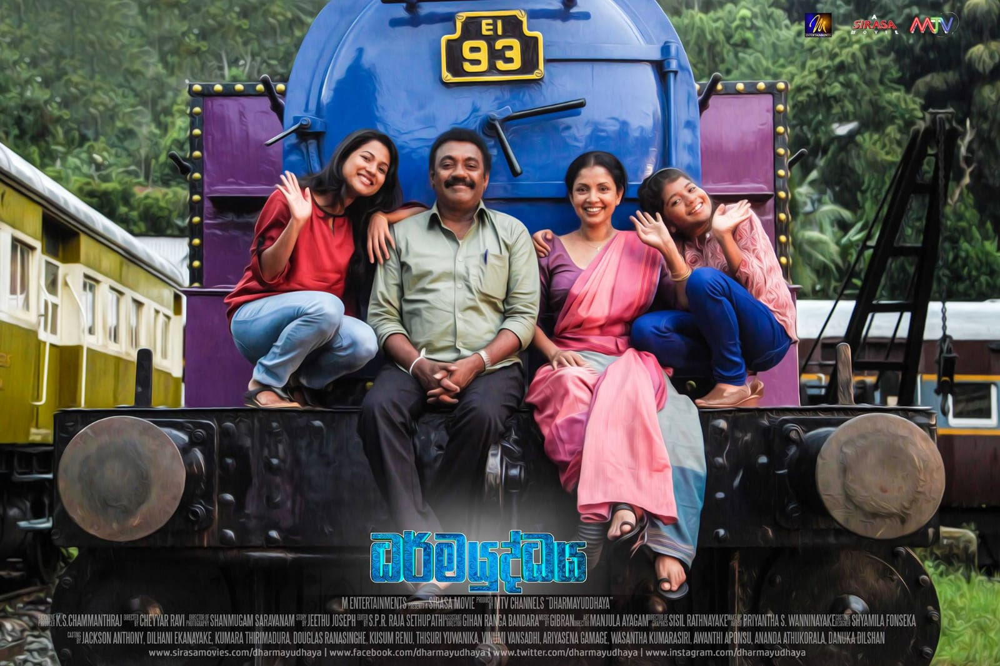

DRISHYAM
Drishyam is an Indian film franchise that has been made in multiple languages, gaining widespread popularity across different regions.
Here’s a breakdown of the key languages in which Drishyam has been released:
- Malayalam: The original Drishyam (2013) directed by Jeethu Joseph, starring Mohanlal, laid the foundation for all the subsequent remakes.
- Kannada: Drishya (2014), the Kannada version, starred Ravichandran and was directed by P. Vasu.
- Telugu: Drushyam (2014) was the Telugu version with Venkatesh in the lead role. It had a sequel titled Drushyam 2 (2021).
- Tamil: Papanasam (2015) was the Tamil remake of Drishyam, directed by Jeethu Joseph and starring Kamal Haasan. It was also a big success.
- Hindi: Drishyam (2015), directed by Nishikant Kamat, starred Ajay Devgn in the lead role. The Hindi version was widely praised and followed by a sequel, Drishyam 2 (2022).
- Sinhalese (Sri Lankan): The Sinhalese remake of Drishyam is titled Dharmayuddhaya (2017), starring Jackson Anthony in the lead role. It was directed by Cheyyar Ravi and became popular in Sri Lanka.
- Chinese: A Chinese adaptation titled Sheep Without a Shepherd (2019) was released, directed by Sam Quah. The movie was set in China and made various cultural adjustments to fit the Chinese context, but the core storyline remained similar to the original Drishyam.
DRISHYAM(Malayalam)

നാലാം വർഷത്തിനു ശേഷം സ്കൂൾ പഠനം ഉപേക്ഷിച്ച അനാഥനായിട്ടായിരുന്നു ജോർജുകുട്ടിയുടെ തുടക്കം. രാജാക്കാട് ഗ്രാമത്തിൽ കേബിൾ ടെലിവിഷൻ സർവീസ് നടത്തുന്ന വ്യവസായിയാണ് ഇപ്പോൾ . അദ്ദേഹം റാണിയെ വിവാഹം കഴിച്ചു, അവർക്ക് അഞ്ജു, അനു എന്നീ രണ്ട് പെൺമക്കളുണ്ട്.
തൻ്റെ ചെറിയ ഓഫീസിലെ ടിവിയുടെ മുമ്പിൽ കൂടുതൽ സമയവും ചെലവഴിക്കുന്നതിനാൽ, കുടുംബം ഒഴികെയുള്ള അവൻ്റെ ഏക താൽപ്പര്യം സിനിമകൾ കാണുക എന്നതാണ് . സിനിമകളെ കുറിച്ചുള്ള അറിവ് കൊണ്ട് നാട്ടുകാര് അദ്ദേഹത്തെ ബഹുമാനിക്കുന്നു.
ഒരു നേച്ചർ ക്യാമ്പിനിടെ , ഇൻസ്പെക്ടർ ജനറൽ ഓഫ് പോലീസ് ഗീതാ പ്രഭാകറിൻ്റെ മകൻ വരുൺ പ്രഭാകറിൻ്റെ കൈവശമുള്ള മറഞ്ഞിരിക്കുന്ന സെൽ ഫോണിൽ നിന്ന് അഞ്ജു കുളിമുറിയിൽ നിന്ന് ഫോട്ടോ എടുക്കുന്നു . വരുൺ അഞ്ജുവിനെ കാണുകയും അവനുമായി ലൈംഗിക ബന്ധത്തിൽ ഏർപ്പെടാൻ അവളെ ബ്ലാക്ക് മെയിൽ ചെയ്യുകയും ചെയ്യുന്നു. അന്നു രാത്രി തന്നെ അവൻ അവരുടെ വീട്ടിൽ എത്തുന്നു, പക്ഷേ റാണിയെ അഞ്ജു വിവരമറിയിക്കുകയും അഞ്ജുവിനെ വെറുതെ വിടാൻ വരുണിനോട് അപേക്ഷിക്കുകയും ചെയ്യുന്നു.
പകരം റാണി തന്നോട് ലൈംഗികബന്ധത്തിൽ ഏർപ്പെടണമെന്ന വ്യവസ്ഥയിൽ അവൻ സമ്മതിക്കുന്നു. വരുണിൻ്റെ ഫോൺ നശിപ്പിക്കാനുള്ള വിജയകരമായ ശ്രമത്തിൽ, അഞ്ജു അബദ്ധത്തിൽ വരുണിൻ്റെ തലയിൽ ഇടിക്കുകയും അവനെ കൊല്ലുകയും ചെയ്യുന്നു. അവർ അവൻ്റെ മൃതദേഹം കമ്പോസ്റ്റ് കുഴിയിൽ കുഴിച്ചിടുന്നു , അതിന് അനു സാക്ഷിയാണ്. സംഭവത്തെക്കുറിച്ച് റാണി ജോർജ്ജ്കുട്ടിയെ അറിയിക്കുകയും അദ്ദേഹം തൻ്റെ കുടുംബത്തെ പോലീസിൽ നിന്ന് രക്ഷിക്കാൻ ഒരു വഴി ആലോചിക്കുകയും ചെയ്യുന്നു.
അവൻ പൊട്ടിയ ഫോൺ നീക്കം ചെയ്യുകയും വരുണിൻ്റെ കാർ വലിച്ചെറിയുകയും ചെയ്യുന്നു, ഇത് ജോർജ്ജ്കുട്ടിയോട് പകയുള്ള ലോക്കൽ പോലീസ് കോൺസ്റ്റബിൾ സഹദേവൻ കാണുന്നു.
ജോർജുകുട്ടി തൻ്റെ കുടുംബത്തെ ഒരു മതപരമായ റിട്രീറ്റിലും ഒരു സിനിമയിലും ഒരു റെസ്റ്റോറൻ്റിലും പങ്കെടുക്കാൻ ഒരു യാത്രയ്ക്ക് കൊണ്ടുപോകുമ്പോൾ , വരുണിനെ കാണാതായി എന്നറിഞ്ഞ് ഗീത അന്വേഷണം ആരംഭിക്കുന്നു.
പ്രാഥമിക അന്വേഷണത്തിന് ശേഷം ഗീത ജോർജുകുട്ടിയെയും കുടുംബത്തെയും ചോദ്യം ചെയ്യാൻ വിളിച്ചു. ഇത് സംഭവിക്കുമെന്ന് ജോർജുകുട്ടി പ്രവചിക്കുകയും കൊലപാതക സമയത്ത് അവരുടെ അലിബി എങ്ങനെ മാറ്റാമെന്ന് തൻ്റെ കുടുംബത്തെ പഠിപ്പിക്കുകയും ചെയ്തിരുന്നു. വ്യക്തിപരമായി ചോദ്യം ചെയ്തപ്പോൾ, അവർ ഒരേ കാര്യം തന്നെ മറുപടി നൽകി, കൂടാതെ റസ്റ്റോറൻ്റിൻ്റെ ബില്ലും സിനിമയുടെയും ബസ് യാത്രയുടെയും ടിക്കറ്റുകളും അവരുടെ അലിബിയുടെ തെളിവായി അവർ കാണിച്ചു. ഗീത അവർ പോയിരുന്ന സ്ഥാപനങ്ങളുടെ ഉടമകളെ ചോദ്യം ചെയ്യുകയും അവരുടെ മൊഴികൾ ജോർജ്ജ്കുട്ടിയുടെ അലിബിയെ തെളിയിക്കുകയും ചെയ്യുന്നു.
എന്നാൽ, സംഭവദിവസം ടിക്കറ്റും ബില്ലും എടുത്ത് ഉടമകളെ പരിചയപ്പെട്ട് അടുത്ത ദിവസം കുടുംബത്തോടൊപ്പം യാത്രയ്ക്ക് പോയിരുന്ന ജോർജ്കുട്ടി തൻ്റെ അലിബിയെ തെളിയിക്കുകയും ഉടമകൾ അറിയാതെ പറയുകയും ചെയ്തുവെന്ന് ഗീത മനസ്സിലാക്കുന്നു. കള്ളം.
ജോർജ്ജ്കുട്ടിയെയും കുടുംബത്തെയും അറസ്റ്റ് ചെയ്യുകയും സത്യം പുറത്തുവരാൻ അനു ഉൾപ്പെടെയുള്ളവരെ സഹദേവൻ ക്രൂരമായി പീഡിപ്പിക്കുകയും ചെയ്യുന്നു. വരുൺ സൃഷ്ടിച്ച അഞ്ജുവിൻ്റെ വീഡിയോയെക്കുറിച്ച് സാമിൻ്റെ സുഹൃത്ത് അലക്സിൽ നിന്ന് ഗീത മനസ്സിലാക്കുന്നു. ഒടുവിൽ അനു വഴങ്ങി മൃതദേഹം അടക്കം ചെയ്ത സ്ഥലം വെളിപ്പെടുത്തുന്നു. കമ്പോസ്റ്റ് കുഴി കുഴിച്ചപ്പോൾ പശുവിൻ്റെ ജഡം കണ്ടെത്തി , ജോർജ്ജ്കുട്ടി മൃതദേഹം നീക്കിയതായി സൂചിപ്പിക്കുന്നു. ഗീതയും സഹദേവനും അതിനോട് പ്രതികരിക്കുന്നതിന് മുമ്പ്, ജോർജ്ജ്കുട്ടിയും അനുവും മാധ്യമങ്ങൾക്ക് മുന്നിൽ ചെന്ന് സഹദേവൻ്റെ കുടുംബത്തിനെതിരെയുള്ള പീഡനത്തെക്കുറിച്ച് പരാതിപ്പെടുന്നു.
ക്ഷുഭിതനായ സഹദേവൻ വീണ്ടും കുടുംബത്തെ ആക്രമിക്കാൻ ശ്രമിക്കുന്നു, എന്നാൽ റാണിയുടെ സഹോദരൻ രാജേഷും ഗ്രാമവാസികളും അവരെ രക്ഷിക്കുകയും സഹദേവനെ കീഴ്പ്പെടുത്തുകയും ചെയ്യുന്നു, പിന്നീട് ഗീത തൻ്റെ സ്ഥാനത്ത് നിന്ന് രാജിവയ്ക്കുന്നതിനിടയിൽ സസ്പെൻഡ് ചെയ്യപ്പെടുന്നു.
ഗീതയും അവളുടെ ഭർത്താവ് പ്രഭാകറും ജോർജുകുട്ടിയെ കാണുന്നത് അവരുടെ പരുഷവും അക്രമാസക്തവുമായ പെരുമാറ്റത്തിനും മകൻ്റെ വികൃതമായ പെരുമാറ്റത്തിനും മാപ്പ് ചോദിക്കാൻ വേണ്ടിയാണ്, എന്നാൽ ജോർജുകുട്ടി സംശയിക്കുന്നു, അതിൽ കള്ളക്കളിയുണ്ടാകാം, എന്നിട്ടും വരുണിൻ്റെ മരണത്തെക്കുറിച്ച് നേരിട്ട് വെളിപ്പെടുത്തുന്നില്ല. ഇപ്പോൾ റിമാൻഡിൽ കഴിയുന്ന ജോർജുകുട്ടി പുതുതായി പണിത ലോക്കൽ പോലീസ് സ്റ്റേഷനിൽ രജിസ്റ്ററിൽ ഒപ്പുവെച്ച് പുറത്തിറങ്ങി.
മൃതദേഹം കണ്ടെത്തുമെന്നും പോലീസ് മണ്ടന്മാരല്ലെന്നും പോലീസ് ഇൻസ്പെക്ടർ പറയുമ്പോൾ, ആളുകളെ സഹായിക്കാൻ പോലീസ് ഉണ്ടെന്ന് താൻ വിശ്വസിക്കുന്ന ഉദ്യോഗസ്ഥനോട് ജോർജ്ജ്കുട്ടി മറുപടി നൽകുന്നു.
പോലീസ് സ്റ്റേഷനിൽ നിന്ന് പുറത്തിറങ്ങുമ്പോൾ, വരുണിൻ്റെ മൃതദേഹം പോലീസ് സ്റ്റേഷനു താഴെ കുഴിച്ചിട്ടത് ജോർജ്കുട്ടിയാണെന്ന് വെളിപ്പെടുന്നു.
DRISHYA(Kannada)
ರಾಜೇಂದ್ರ ಪೊನ್ನಪ್ಪ ನಾಲ್ಕನೇ ತರಗತಿಯ ನಂತರ ಶಾಲೆ ಬಿಟ್ಟಿದ್ದ ಅನಾಥ. ಈಗ ಉದ್ಯಮಿಯಾಗಿದ್ದು, ಗ್ರಾಮೀಣ ಪ್ರದೇಶದಲ್ಲಿ ಕೇಬಲ್ ಟೆಲಿವಿಷನ್ ಸೇವೆ ನಡೆಸುತ್ತಿದ್ದಾರೆ. ಅವರು ಸೀತಾ ಅವರನ್ನು ವಿವಾಹವಾಗಿದ್ದಾರೆ ಮತ್ತು ಅವರಿಗೆ ಇಬ್ಬರು ಹೆಣ್ಣು ಮಕ್ಕಳಿದ್ದಾರೆ, ಪ್ಲಸ್ ಟು ವಿದ್ಯಾರ್ಥಿನಿ ಸಿಂಧು ಮತ್ತು ಆರನೇ ತರಗತಿಯ ವಿದ್ಯಾರ್ಥಿನಿ ಶ್ರೇಯಾ. ಅವರ ಕುಟುಂಬವನ್ನು ಹೊರತುಪಡಿಸಿ ಅವರ ಏಕೈಕ ಆಸಕ್ತಿ ಚಲನಚಿತ್ರಗಳನ್ನು ನೋಡುವುದು.
ಅವರು ತಮ್ಮ ಚಿಕ್ಕ ಕಚೇರಿಯಲ್ಲಿ ಟಿವಿ ಮುಂದೆ ಹೆಚ್ಚಿನ ಸಮಯವನ್ನು ಕಳೆಯುತ್ತಾರೆ.
ಪ್ರಕೃತಿ ಶಿಬಿರದ ಸಮಯದಲ್ಲಿ, ಸಿಂಧು ಬಾತ್ರೂಮ್ನಲ್ಲಿ ಮರೆಮಾಡಿದ ಸೆಲ್ ಫೋನ್ನಿಂದ ಫೋಟೋ ತೆಗೆಯುತ್ತಾರೆ. ಅಪರಾಧಿ ತರುಣ್ ಪೊಲೀಸ್ ಮಹಾನಿರೀಕ್ಷಕ ರೂಪ ಚಂದ್ರಶೇಖರ್ ಅವರ ಪುತ್ರ. ತರುಣ್ ಸೀತಾ ಮತ್ತು ಅವಳ ಮಗಳಿಂದ ಆಕಸ್ಮಿಕವಾಗಿ ಕೊಲ್ಲಲ್ಪಟ್ಟರು, ಅವರು ಕ್ಲಿಪ್ ಬಳಸಿ ಬ್ಲ್ಯಾಕ್ ಮೇಲ್ ಮಾಡಲು ಬಂದಾಗ ಅವರಲ್ಲಿ ಯಾರಾದರೂ ಅವನೊಂದಿಗೆ ಮಲಗಬೇಕು ಅಥವಾ ಅವನು ಖಂಡಿತವಾಗಿಯೂ ಕ್ಲಿಪ್ ಅನ್ನು ಇಂಟರ್ನೆಟ್ ಮೂಲಕ ಪ್ರಕಟಿಸುತ್ತಾನೆ. ಅವರು ಅವನ ದೇಹವನ್ನು ಕಾಂಪೋಸ್ಟ್ ಪಿಟ್ನಲ್ಲಿ ಮರೆಮಾಡುತ್ತಾರೆ, ಅದಕ್ಕೆ ಶ್ರೇಯಾ ಸಾಕ್ಷಿಯಾಗಿದ್ದಾಳೆ.
ಸೀತೆ ರಾಜೇಂದ್ರನಿಗೆ ಘಟನೆಯ ಬಗ್ಗೆ ಹೇಳುತ್ತಾಳೆ ಮತ್ತು ಅವನು ತನ್ನ ಕುಟುಂಬವನ್ನು ಕಾನೂನಿನಿಂದ ರಕ್ಷಿಸಲು ಒಂದು ಮಾರ್ಗವನ್ನು ರೂಪಿಸುತ್ತಾನೆ.
ಒಡೆದ ಸೆಲ್ ಫೋನ್ ತೆಗೆದು ತರುಣ್ ಕಾರನ್ನು ವಿಲೇವಾರಿ ಮಾಡುತ್ತಾನೆ, ರಾಜೇಂದ್ರನ ಮೇಲೆ ದ್ವೇಷ ಹೊಂದಿರುವ ಪೊಲೀಸ್ ಪೇದೆ ಸೂರ್ಯಪ್ರಕಾಶ್ ನೋಡುತ್ತಾನೆ. ಧಾರ್ಮಿಕ ಸಭೆಯಲ್ಲಿ ಪಾಲ್ಗೊಳ್ಳಲು, ಚಲನಚಿತ್ರವನ್ನು ವೀಕ್ಷಿಸಲು ಮತ್ತು ರೆಸ್ಟೋರೆಂಟ್ನಲ್ಲಿ ಊಟ ಮಾಡಲು ರಾಜೇಂದ್ರ ತನ್ನ ಕುಟುಂಬವನ್ನು ಪ್ರವಾಸಕ್ಕೆ ಕರೆದೊಯ್ಯುತ್ತಾನೆ. ರೂಪಾ, ತನ್ನ ಮಗ ನಾಪತ್ತೆಯಾಗಿರುವುದನ್ನು ಅರಿತು ತನಿಖೆ ಆರಂಭಿಸುತ್ತಾಳೆ.
ಪ್ರಾಥಮಿಕ ತನಿಖೆಯ ನಂತರ, ರೂಪಾ ರಾಜೇಂದ್ರ ಮತ್ತು ಕುಟುಂಬವನ್ನು ವಿಚಾರಣೆಗಾಗಿ ಕರೆದಳು. ಇದು ಸಂಭವಿಸುತ್ತದೆ ಎಂದು ರಾಜೇಂದ್ರ ಅವರು ಭವಿಷ್ಯ ನುಡಿದಿದ್ದರು ಮತ್ತು ಕೊಲೆಯ ಸಮಯದಲ್ಲಿ ಅವರ ಅಲಿಬಿಯನ್ನು ಹೇಗೆ ಬದಲಾಯಿಸಬೇಕೆಂದು ಅವರ ಕುಟುಂಬಕ್ಕೆ ಕಲಿಸಿದರು. ಪ್ರತ್ಯೇಕವಾಗಿ ಪ್ರಶ್ನಿಸಿದಾಗ, ಅವರು ಒಂದೇ ವಿಷಯವನ್ನು ಉತ್ತರಿಸಿದರು ಮತ್ತು ಅವರು ತಮ್ಮ ಅಲಿಬಿಯ ಪುರಾವೆಯಾಗಿ ರೆಸ್ಟೋರೆಂಟ್ನ ಬಿಲ್, ಚಲನಚಿತ್ರ ಟಿಕೆಟ್ಗಳು ಮತ್ತು ಬಸ್ ಪ್ರಯಾಣದ ಟಿಕೆಟ್ಗಳನ್ನು ತೋರಿಸಿದ್ದಾರೆ.
ರೂಪಾ ಅವರು ಬಂದಿರುವ ಸಂಸ್ಥೆಗಳ ಮಾಲೀಕರನ್ನು ಪ್ರಶ್ನಿಸುತ್ತಾರೆ ಮತ್ತು ಅವರ ಹೇಳಿಕೆಗಳು ರಾಜೇಂದ್ರನ ಅಲಿಬಿಯನ್ನು ಸಾಬೀತುಪಡಿಸುತ್ತವೆ. ಘಟನೆಯ ದಿನ ರಾಜೇಂದ್ರ ಟಿಕೆಟ್ ಮತ್ತು ಬಿಲ್ ತೆಗೆದುಕೊಂಡು ಮಾಲೀಕರೊಂದಿಗೆ ಪರಿಚಯ ಮಾಡಿಕೊಂಡಿದ್ದನು ಮತ್ತು ಮರುದಿನ ಕುಟುಂಬದೊಂದಿಗೆ ಪ್ರವಾಸಕ್ಕೆ ಹೋಗಿದ್ದನೆಂದು ರೂಪಾ ಅರಿತುಕೊಂಡನು, ಹೀಗೆ ತನ್ನ ಅಲಿಬಿಯನ್ನು ಸಾಬೀತುಪಡಿಸುತ್ತಾನೆ ಮತ್ತು ಮಾಲೀಕರಿಗೆ ತಿಳಿಯದೆ ಸುಳ್ಳು ಹೇಳುತ್ತಾನೆ.
ರೂಪಾ ರಾಜೇಂದ್ರ ಮತ್ತು ಕುಟುಂಬವನ್ನು ಬಂಧಿಸುತ್ತಾರೆ ಮತ್ತು ಸೂರ್ಯಪ್ರಕಾಶ್ ಅವರಲ್ಲಿ ಸತ್ಯವನ್ನು ಸೋಲಿಸಲು ವಿವೇಚನಾರಹಿತ ಶಕ್ತಿಯನ್ನು ಬಳಸುತ್ತಾರೆ. ಅಂತಿಮವಾಗಿ, ಶ್ರೇಯಾ ದೇಹವನ್ನು ಸಮಾಧಿ ಮಾಡಿದ ಸ್ಥಳವನ್ನು ಬಹಿರಂಗಪಡಿಸುತ್ತಾಳೆ. ಕಾಂಪೋಸ್ಟ್ ಗುಂಡಿಯನ್ನು ಅಗೆದ ನಂತರ, ಅವರು ಕರುವಿನ ಮೃತದೇಹವನ್ನು ಕಂಡುಕೊಂಡರು, ಇದು ರಾಜೇಂದ್ರ ದೇಹವನ್ನು ಸ್ಥಳಾಂತರಿಸಿದೆ ಎಂದು ಸೂಚಿಸುತ್ತದೆ. ಶ್ರೇಯಾ ಮಾಧ್ಯಮಗಳಿಗೆ ವರದಿ ಮಾಡಿ ಸೂರ್ಯಪ್ರಕಾಶ್ ವಿರುದ್ಧ ದೂರು ನೀಡಿದ್ದಾರೆ. ಕಾನ್ಸ್ಟೆಬಲ್ ಅಮಾನತುಗೊಂಡಿದ್ದು, ರೂಪಾ ತನ್ನ ಹುದ್ದೆಗೆ ರಾಜೀನಾಮೆ ನೀಡಿದ್ದಾರೆ. ರೂಪಾ ಮತ್ತು ಆಕೆಯ ಪತಿ ರಾಜೇಂದ್ರನನ್ನು ಭೇಟಿಯಾಗಿ ತಮ್ಮ ಅಸಭ್ಯ ಮತ್ತು ಹಿಂಸಾತ್ಮಕ ವರ್ತನೆಗೆ ಕ್ಷಮೆ ಕೇಳುತ್ತಾರೆ.
ಇದರಲ್ಲಿ ಫೌಲ್ ಪ್ಲೇ ಇರಬಹುದೆಂದು ರಾಜೇಂದ್ರ ಶಂಕಿಸುತ್ತಾನೆ ಮತ್ತು ಅವನ ಕುಟುಂಬವು ಅಪರಾಧ ಮಾಡಿದೆ ಎಂದು ಇನ್ನೂ ನೇರವಾಗಿ ಬಹಿರಂಗಪಡಿಸುವುದಿಲ್ಲ. ಈಗ ರಿಮಾಂಡ್ನಲ್ಲಿರುವ ರಾಜೇಂದ್ರ, ಹೊಸದಾಗಿ ನಿರ್ಮಿಸಲಾದ ಸ್ಥಳೀಯ ಪೊಲೀಸ್ ಠಾಣೆಯಲ್ಲಿ ರಿಜಿಸ್ಟರ್ಗೆ ಸಹಿ ಮಾಡುತ್ತಾನೆ. ಅವನು ಹೊರಡುವಾಗ, ಒಂದು ಫ್ಲ್ಯಾಷ್ಬ್ಯಾಕ್ ಅವರು ಕೈಯಲ್ಲಿ ಸಲಿಕೆಯೊಂದಿಗೆ ಅಪೂರ್ಣ ಪೊಲೀಸ್ ಠಾಣೆಯಿಂದ ಹೊರಡುವುದನ್ನು ತೋರಿಸುತ್ತದೆ, ಅವರು ತರುಣ್ನ ದೇಹವನ್ನು ಹೇಳಿದ ತನಿಖೆಯನ್ನು ನಿರ್ವಹಿಸಿದ ಪೊಲೀಸ್ ಠಾಣೆಯ ಅಡಿಪಾಯದಲ್ಲಿ ಮರೆಮಾಡಿದ್ದಾರೆ ಎಂದು ಸೂಚಿಸುತ್ತದೆ.
DRUSHYAM(Telugu)
రాంబాబు (వెంకటేష్) అరకు ప్రాంతంలోని రాజవరం అనే గ్రామంలో తన భార్య జ్యోతి (మీనా) పేరు మీద పెట్టిన జ్యోతి కేబుల్ నెట్వర్క్ ద్వారా కేబుల్ ఆపరేటరుగా పనిచేస్తాడు. అనాధైన రాంబాబుకి జ్యోతి, తన ఇద్దరు పిల్లలు అంజు (కృతిక జయకుమార్), అను (ఎస్థర్)లే లోకం. ఇదీ కాక నాలుగవ తరగతి పాసయ్యాక చదువు ఆపేసిన రాంబాబుకి సినిమాలంటే విపరీతమైన ఆసక్తి. మధ్యతరగతి కుటుంబం అయినా వీళ్ళు ఎప్పుడు సంతోషంగా ఉంటారు. ఊళ్ళో కూడా రాంబాబు అంటే చాలా మందికి అభిమానం, గౌరవం. రాంబాబు ఎప్పుడు బాబాయి అని పిలిచే ఒక వ్యక్తి ఒక హోటల్ నడుపుతుంటాడు. ఆ హోటల్ ముందు కొత్త పోలీస్ స్టేషను కడుతుంటారు. రాంబాబు నిజాయితీపరుడైతే అతని శత్రువు వీరభద్రం (రవి కాలె) అవినీతిపరుడైన కానిస్టేబుల్.
వీరభద్రం ఎందరినో హింసించి బాధపెట్టి బతుకుతుంటే రాంబాబుకి అతనికి గొడవలొచ్చి శత్రువులుగా మారతారు. అది కూడా ఒకందుకు రాంబాబుకి ఊళ్ళో జనాలకి తనపై గౌరవం పెరిగేలా చేసింది.
అంతా బాగుందనుకున్నప్పుడు నేచర్ క్యాంప్ వెళ్ళి తిరిగొచ్చిన అంజుని వరుణ్ (రోషన్ బషీర్) అనే కుర్రాడు రాజవరంలో తిరిగి కలుస్తాడు. అక్కడ క్యాంపులో అంజు బట్టలు మార్చుకుంటున్నప్పుడు సెల్ ఫోనులో తీసిన వీడియో చూపించి తనని బెదిరిస్తాడు.
అంజు నన్ను వదిలెయ్యమని బ్రతిమాలినా ప్రయోజనం ఉండదు. ఆ రాత్రి వర్షం పడుతున్నప్పుడు వరుణ్ పసుపు రంగు మారుతి కారులో రాంబాబు ఇంటికి వస్తాడు. అక్కడ రాత్రి 11 గంటలకు వరుణ్ అంజు, జ్యోతిలను వీడియో చూపించి బెదిరించి తనతో ఒక గంట పడుకోమంటాడు. ఆవేశంతో అంజు వరుణ్ తలపై ఐరన్ రాడ్డుతో మోదగా అతను కింద పడి ఎక్కడో లోపల గాయమై చనిపోతాడు. వెంటనే అంజు సెల్ ఫోన్ పగలకొడుతుంది. వరుణ్ శవాన్ని ఒక గోనుసంచిలో మూటకట్టి ఎరువుల కోసం రాంబాబు తవ్విన గొయ్యిలో పారేసి పూడ్చేస్తారు. అను జ్యోతి, అంజు గొయ్యిలో గోనుసంచి పడేసి పూడ్చెయ్యడాన్ని అను కిటికీలోనుంచి చూస్తుంది. రాంబాబుకి ఫోన్ చేసి చెప్దామంటే అతను సిగ్నల్స్ లేని కారణంగా సెల్ ఫోన్ కొనడు, వాడడు.
వర్షం కురుస్తున్నందువల్ల కేబుల్ ఆఫీసులో ఉన్న రాంబాబు ఫోన్ పని చెయ్యదు.
కేబుల్ ఆఫీసులో రాత్రంతా గడిపి, సినిమాలు చూసి ఇంటికి తిరిగి రావడం రాంబాబు నిత్యం చేసే పని అవ్వడం వల్ల మరుసటి ఉదయం రాంబాబుకి జ్యోతి, పిల్లలు జరిగిందంతా చెప్తారు. జరిగిందంతా ఓపిగ్గా విన్న రాంబాబు కుటుంబాన్ని ఓదార్చి పోలీసుల నుంచి ఎలాగైనా మిమ్మల్ని కాపాడతానని హామీ ఇస్తాడు. కారణం ఏంటంటే, వరుణ్ ప్రపంచం దృష్టిలో ఇంకా బ్రతికే ఉన్నాడు. తన తల్లి గీత (నదియా) ఇన్స్పెక్టర్ జనరల్. తండ్రి ప్రభాకర్ (నరేష్) పెద్ద కోటీశ్వరుడు. లేక లేక పుట్టిన సంతానం అవ్వడం వల్ల వరుణ్ గారాభంగా పెరిగి దురలవాట్లకు బానిసయ్యాడు. అలాంటిది అతను కనపడటం లేదంటే కచ్చితంగా పోలీసులు తనకోసం వెతుకుతారు. అందుకోసం వరుణ్ సెల్, కారుని వెతికి తద్వారా అతని ఆచూకీని తెలుసుకుంటారు. కాబట్టి ఇప్పుడు రాంబాబు వాటిని మాయం చెయ్యాలి.
ముందు వరుణ్ చనిపోయిన ప్రదేశానికెళ్ళి దినపత్రికతో విరిగిపోయిన ఫోనులోని సిం కార్డుని తీసుకుని దాన్ని పేపరులో మడిచి జేబులో పెట్టుకుని కారు తీసుకుని విజయనగరం వెళ్తుండగా ఆ పసుపు రంగు కారుని, అందులో రాంబాబుని వీరభద్రం చూస్తాడు. అయితే అతని మాటలను ఎవ్వరూ నమ్మరు. విజయనగరంలో సెకండ్ హ్యాండ్ ఫోన్ కొని ఆ షాప్ వాడి చేతే సిం కార్డ్ పెట్టించి, అతని చేతే ఫోన్ సైలెంటులో పెట్టించి తన వేలి ముద్రలు సెల్ ఫోనుపై పడకుండా దాన్ని కారులో ఉన్న మద్యంతో తడిపి బాగా తోమి గుడ్డలో చుట్టేసి దాన్ని ఒక నేషనల్ పర్మిట్ లారీపై పడేస్తాడు. ఆ తర్వాత దేవులపల్లిలో వాతావరణ కాలుష్యం కారణంగా మూసివేయబడిన క్వారీలోని చెరువులోకి తోసేసి ఇంటికొచ్చాక రేపు జ్యోతి, పిల్లలతో విజయనగరంలో సాయిబాబా గుడిలో జరుగుతున్న సచ్చిదానంద స్వామీజీ ప్రవచనాలకు వెళ్దామంటాడు.
విజయనగరం వెళ్ళి అక్కడ సాయిబాబా గుడిలో దర్శనం చేసుకుని సాయంత్రం దాకా అక్కడే ఉండి రాత్రి ఒక చిన్న హోటల్లో టిఫిన్ చేసి ఒక లాడ్జిలో దిగి మరుసటి రోజు ఉదయం పక్క హోటల్ నుంచి టిఫిన్ తెప్పించి బిల్లు చింపేస్తాడు. ఆ తర్వాత థియేటరులో రేసుగుర్రం సినిమా చూసి పెద్ద హోటలుకెళ్ళి బిరియాని తిని ఆర్టీసీ బస్సెక్కి సాయంత్రానికి ఇంటికి చేరుకుంటారు.
దేవులపల్లి క్వారీలోని చెరువులో వరుణ్ కారుని వారాల తర్వాత ఇద్దరు కుర్రాళ్ళ వల్ల దాన్ని బయటకు తీస్తారు పోలీసులు. పోలీసులు వరుణ్ కారు, సెల్ ఫోన్ రూట్లను పరిశీలించి ఆ ఫోన్ విశాఖపట్నంలో కవరేజ్ ఏరియాలో మొదలై కొంత దూరం వెళ్ళాక నాన్ కవరేజ్ ఏరియాలోకి వెళ్ళి మళ్ళీ విజయనగరంలో కవరేజ్ ఏరియాలోకి వచ్చి ఆపై చివరికి ఖరఘ్ పూర్ ప్రాంతంలోని ఒక పారిశ్రామిక ప్రాంతంలో సిగ్నల్స్ ఆగిపోయాయి. వరుణ్ రాజవరంలోని ఒక ఏటీఎంలో 20 వేల రూపాయలు క్రెడిట్ కార్డ్ వాడి తీసుకున్నాడని తెలుసుకున్న గీత రాజవరం పోలీస్ స్టేషను సబ్ ఇన్స్పెక్టర్ నవీన్ కుమార్ ఆఫీసుకి వరుణ్ ఫొటో ఫ్యాక్స్ చేస్తుంది. వరుణ్ వాడిన పసుపు కారుని చూసి వీరభద్రం ఈ కారుని రాంబాబు తీసుకెళ్ళడం నేను చూసానంటాడు. ఆగస్టు 3న ఒక ఇంటికి పాస్ పోర్ట్ వెరిఫికేషన్ కోసం వెళ్ళిన వీరభద్రం రాంబాబు ఆ కారుని తియ్యడం చూస్తాడు.
కానీ ఎవ్వరూ అతని మాటలు నమ్మరు. ప్రాథమిక విచారణ జరిపాక నవీన్ గీత కోరుకున్నట్టుగానే రాంబాబుని, అతని కుటుంబాన్ని విచారణకు పిలుస్తారు. ఇది జరుగుతుందని ఊహించిన రాంబాబు తన కుటుంబానికి పోలీసుల ముందు ఎలా మాట్లాడాలో నేర్పిస్తాడు. వాళ్ళందరూ చెప్పేది ఒకటే. ఆగస్టు 2 ఉదయం దాదాపు 8:30కి విజయనగరం సాయిబాబా గుడికి వెళ్ళారు. అప్పటికే అక్కడ ప్రవచనాలు మొదలయ్యాయి. రాత్రి హోటల్లో బస చేసి ఆగస్టు 3 పొద్దున్న రేసుగుర్రం సినిమా చూసి పెద్ద హోటల్లో బిరియాని తిని సాయంత్రం 5:00కి ఆర్టీసీ బస్సెక్కి వర్షంలో తడిసి ఇంటికి చేరారు. జలుబు, జ్వరం రావడం వల్ల పిల్లలు రెండు రోజులు స్కూలుకి వెళ్ళలేదు. సాక్ష్యాలుగా హోటల్ బిల్స్, బస్ టికెట్స్, సినిమా టికెట్స్, మెడికల్ బిల్స్ చూపిస్తారు. ఇవన్నీ విన్నాక వాళ్ళని ఇంటికి పంపేసి గీత ఇదొక కట్టుకథ అని బలంగా నమ్మి వాళ్ళు చెప్పిన కథలోని ప్రతీపాత్రని తీసుకు రమ్మంటుంది.
వాళ్ళందరూ అనగా హోటల్ ఓనర్ (కాశీ విశ్వనాథ్), లాడ్జి ఓనర్ (జోగినాయుడు), థియేటర్ ప్రొజెక్టర్ ఆపరేటర్ (ఉత్తేజ్), బస్ కండక్టర్స్ (చిత్రం శ్రీను, కాదంబరీ కిరణ్), ప్రవచనం చెప్పిన స్వామీజీతో ఫోనులో మాట్లాడి గీత రాంబాబు వాళ్ళందరినీ అయితే ఆగస్టు 2 లేదా 3న కలిసాడని తెలుసుకుంటుంది. ఇదంతా జరిగి దాదాపు 25 రోజులైనా కూడా మీకెలా గుర్తుందని అడిగితే వాళ్ళంతా 3 రోజుల క్రితం మేం కలిసినప్పుడు మాట్లాడుకున్నామని, ఆ సందర్భంలో మేం మొదట ఆ రోజుల్లో అనగా ఆగస్టు 2 లేదా 3న కలిసామని అతని ద్వారా తెలుసుకున్నామని చెప్తారు. గీత అప్పుడు నిజాన్ని గ్రహిస్తుంది.
రాంబాబు ఆగస్టు 4,5న ప్రయాణం చేసాడు. ఆ రెండు రోజుల్లో చెప్పిందంతా జరిగింది. కానీ రాంబాబు చూపించిన సాక్ష్యాల వెనుక అసలు రహస్యం వేరే ఉంది. అదేంటంటే రాంబాబు ఆగస్టు 3న కారు చెరువులో తోసేసాక ఒక పెద్ద హోటలుకెళ్ళి అక్కడ నలుగురు తిన్న బిరియాని బిల్లుని దొంగిలించాడు. థియేటరుకెళ్ళి 4 టికెట్లు తీసుకుని సినిమా చూడలేదు. వేరే హోటలుకెళ్ళి అక్కడ టిఫిన్ తీసుకుని బిల్ తీసుకున్నాడు. ఆపై తిరుగుప్రయాణంలో ఆర్టీసీ బస్సెక్కి 4 టికెట్లు తీసుకుని రాత్రి ఆఫీసుకెళ్ళి అతని అసిస్టంట్ సింహాద్రితో నేను కుటుంబంతో సహా విజయనగరానికి ప్రవచనాలకి వెళ్తున్నానని చెప్పి 4,5 తేదీల్లో విజయనగరం వెళ్ళాడు. రాత్రి హోటల్లో దిగేటప్పుడు ఇది కుటుంబాలుండే లాడ్జ్ కాదేమోనని జ్యోతి చేత చెప్పించి లాడ్జ్ ఓనరుని జ్యోతి, పిల్లలతో రూము చూపించేందుకు పంపిన రాంబాబు బిల్ తీసుకోని రిజిస్టరులో 2వ తేదీన వచ్చి 3వ తేదీన వెళ్ళినట్లుగా రాసి బిల్ తీసుకుని ఆ రెండో రిజిస్టరులో వేరే పేరుతో వేరే రాతతో సైన్ చేస్తాడు.
ప్రవచనం సీడీ మారుపేరుతో కొని ఇంట్లో కూర్చుని చూసి దాన్నే ఊళ్ళో బాబాయి హోటల్లో అందరికీ ప్రవచనం విశేషాలుగా చెప్పి తను ఊళ్ళో లేనట్టుగా నమ్మించాడు. కొన్ని రోజుల తర్వాత విజయనగరంలో హోటల్ ఓనర్, ఆర్టీసీ బస్ కండక్టర్, థియేటర్ ప్రొజెక్టర్ ఆపరేటర్, ఊళ్ళో బస్ కండక్టర్లను కలిసి తను ఆగస్టు 2,3 ఊళ్ళో లేనని నమ్మించి వాళ్ళ మనసుల్లో అది నాటుకుపోయేలా చేసాడు. ఒక రోజు రాంబాబు కుటుంబాన్ని పోలీసులు తీసుకెళ్తుంటే జ్యోతి తమ్ముడు రాజేష్ ఆ ఉదంతాన్ని చూస్తాడు. రాజేష్ రాంబాబు గతంలో ఇచ్చిన సూచనల ప్రకారం తన తల్లిదండ్రులతోపాటు ఊళ్ళో జనాన్ని, రాంబాబు సన్నిహితులని తీసుకుని అక్కడే ఇంటిదగ్గరుండి మీడియాని పిలుస్తాడు. ఈలోపు వాళ్ళచేత నిజం కక్కించడానికి వీరభద్రం చేత రాంబాబు, జ్యోతి, అంజులను గీత జాలిలేకుండా కొట్టిస్తుంది. అయినా వాళ్ళు నిజం చెప్పారు. అప్పుడు ప్రభాకర్ మండిపడి ఇదంతా ఆపెయ్యమంటాడు.
వాళ్ళు నిర్దోషులయితే, వాళ్ళకేమైనా జరిగితే జీవితాంతం బాధపడాల్సివస్తుందని హెచ్చరిస్తాడు. ఈలోపు వరుణ్ స్నేహితుడి ద్వారా గీత, ప్రభాకర్ నేచర్ క్యాంపులో జరిగినదంతా తెలుసుకుంటారు.
వీరభద్రం అనుని కొట్టాక ఆ అమ్మాయి తననెక్కడ చంపుతారోనని భయపడి జ్యోతి, అంజు ఒక గోనుసంచిని గొయ్యిలో పాతిపెట్టడం తను చూసానని చెప్తుంది. అక్కడికెళ్ళి మీడియా సమక్షంలో తవ్వించి చూస్తే ఆ గోనుసంచిలో కుళ్ళిపోయిన పంది శవం ఉంటుంది. వెంటనే మీడియా ముందుకెళ్ళి రాంబాబు తమ కుటుంబంపై కక్షతో వీరభద్రం తన కుటుంబాన్ని హత్యకేసులో ఇరికించాలని చూసాడనీ, చిన్నపిల్లని కూడా చూడకుండా తన కూతురిని గాయపరిచాడని వాదిస్తాడు. దాడి చెయ్యబోతున్న వీరభద్రాన్ని ఊళ్ళో జనమంతా కలిసి చావబాదుతారు. రాంబాబు కుటుంబాన్ని నిర్దోషులుగా ప్రకటించిన జిల్లా కోర్ట్ వీరభద్రాన్ని విధులనుండి బహిష్కరిస్తుంది. మిగిలిన పోలీసులందరినీ వేరే ప్రాంతాలకు బదిలీ చేస్తుంది. గీత తన పదవికి రాజీనామా చేస్తుంది. అన్నీ వదిలేసి అమెరికాకి వెళ్ళేముందు గీత, ప్రభాకర్ రాంబాబుని క్షమించమని కోరుకుంటారు.
అప్పుడు రాంబాబు నా కుటుంబమే నా ప్రపంచం, ఆ అనందమైన ప్రపంచాన్ని ఒక్కసారిగా కూల్చేయాలని చూసిన ఒక అతిథిని గతిలేక తిరిగిరాని లోకాలకు పంపేసానని చెప్తాడు. వరుణ్ హత్య కేవలం తన కూతురి భవిష్యత్తును కాపాడుకోవడం కోసమే జరిగిందని చెప్పి రాంబాబు వాళ్ళని క్షమించమని అడుగుతాడు. ఎవరిదారిన వారు వెళ్ళాక కొత్తగా కట్టిన పోలీస్ స్టేషనులో కొత్త సబ్ ఇన్స్పెక్టర్ దగ్గర రిజిస్టర్ సైన్ చేసి వెళ్ళిపోతాడు. రాంబాబు వెళ్తుంటే ప్రేక్షకులకు వరుణ్ శవం సబ్ ఇన్స్పెక్టర్ రూములో ఫ్లోరింగ్ పని జరగకముందు కారుని చెరువులో ముంచేసిన రాత్రి రాంబాబు అక్కడ ఒక గొయ్యి తీసి పాతిపెట్టాడని ఒక ఫ్లాష్ బ్యాక్ ద్వారా తెలియజేసే సన్నివేశంతో కథ ముగుస్తుంది.
PAPANASAM(Tamil)
சுயம்புலிங்கம் தனது 5 வது வகுப்புக்குப் பிறகு படிப்பை நிறுத்திய அனாதை. 2014 ஆம் ஆண்டில், அவர் தமிழ்நாட்டின் திருநெல்வேலி மாவட்டத்தில் உள்ள பாபநாசம் என்ற சிறிய நகரத்தில் கேபிள் டிவி சேவையை நடத்தும் ஒரு தொழிலதிபர் ஆவார். கிராமத்தின் முக்கிய பகுதியில் அவருக்கு இரண்டு கட்டிடங்கள் உள்ளன, மேலும் 5 ஏக்கர் பரப்பளவில் ஒரு தோட்டத்தில் நன்கு கட்டப்பட்ட வீடு உள்ளது. அவருக்கு ராணிக்கு திருமணமாகி 16 வயதில் செல்வி மற்றும் 10 வயது மீனா என்ற இரண்டு மகள்கள் உள்ளனர். அவரது குடும்பத்தை தவிர்த்து அவரது ஒரே ஆர்வம் திரைப்படம் பார்ப்பதுதான். அவர் தனது இரவு நேரத்தின் பெரும்பகுதியை டிவிக்கு முன்னால் தனது சிறிய அலுவலகத்தில் செலவிடுகிறார்.
இயற்கை முகாமின் போது, செல்வி குளிப்பது குளியலறையில் மறைக்கப்பட்ட செல்போன் மூலம் புகைப்படம் எடுக்கப்படுகிறது. குற்றவாளி, வருண், இன்ஸ்பெக்டர் ஜெனரல் கீதா பிரபாகரின் மகன். பல நாட்களுக்குப் பிறகு, வருண் செல்வியை அழைத்து, பாலியல் உதவிக்காக அவளை மிரட்டினார். அவன் அவளை நள்ளிரவில் தன் வீட்டுத் தோட்டக் கொட்டகைக்கு வரச் சொல்கிறான். செல்வி தனது தாயை அழைத்து வருகிறார், இருவரும் வருனிடம் தனியாக இருக்கும்படி கெஞ்சுகிறார்கள். ஒப்பந்தத்தில் செல்விக்கு பதிலாக வருண் ராணியிடம் கேட்கிறார். ஆத்திரமடைந்த செல்வி, உலோகத் தடியால் தொலைபேசியை வருணின் கையில் அடித்தார், ஆனால் தடி வருணின் தலையையும் தாக்கியது.
சம்பவ இடத்திலேயே வருண் இறந்தார். ராணியும் செல்வியும் அவரது உடலை உரம் குழியில் புதைத்தனர், இது மீனாவின் தூரத்திலிருந்து பார்க்கப்பட்டது. மறுநாள் காலையில், ராணி சுயம்புலிங்கத்திடம் இந்த சம்பவத்தைப் பற்றிச் சொல்கிறார், அவர் தனது குடும்பத்தை சட்டத்திலிருந்து காப்பாற்ற ஒரு வழியை வகுத்தார்.
அவர் வருணின் உடைந்த செல்போனை அகற்றி, சிம் கார்டை மற்றொரு மொபைல் போனில் வைத்தார், அதை அவர் ஒரு தேசிய அனுமதி லாரி மீது வீசினார் மற்றும் வருணின் மஞ்சள் மாருதி ஜென் காரை அப்புறப்படுத்தினார், இது சுயம்புலிங்கத்தின் மீது வெறுப்பு கொண்ட கான்ஸ்டபிள் பெருமாளால் பார்க்கப்படுகிறது. சுயம்புலிங்கம் தனது குடும்பத்தை தென்காசிக்கு ஒரு கோவிலில் பிரார்த்தனை செய்ய, ஒரு திரைப்படம் பார்க்க, ஒரு ஹோட்டலில் தங்கி உணவகத்தில் சாப்பிட அழைத்துச் செல்கிறார்.
கீதா தனது காணாமல் போன மகன் குறித்து விசாரணையைத் தொடங்கினார்.
ஆரம்ப விசாரணைக்குப் பிறகு, கீதா சுயம்புலிங்கத்தையும் அவரது குடும்பத்தினரையும் விசாரணைக்கு அழைக்கிறார். இது நடக்கும் என்று கணித்த சுயம்புலிங்கம், கொலையின் போது அவர்களின் குடும்பத்தை எப்படி மாற்றுவது என்பதை ஏற்கனவே தனது குடும்பத்திற்கு கற்றுக் கொடுத்தார். தனித்தனியாக விசாரித்தபோது, அவர்கள் அதே பதில்களைத் தருகிறார்கள். சுயம்புலிங்கம் உணவகத்தின் பில், ஹோட்டல் பில், திரைப்பட டிக்கெட் மற்றும் பஸ் டிக்கெட்டுகளையும் அவர்களின் அலிபிக்கு சான்றாக வழங்குகிறார். கீதா அவர்கள் சென்ற நிறுவனங்களின் உரிமையாளர்களை கேள்வி கேட்கிறார் மற்றும் அவர்களின் அறிக்கைகள் சுயம்புலிங்கத்தின் அலிபியை நிரூபிக்கின்றன.
இருப்பினும், கீதா பின்னர் சுயம்புலிங்கம் சான்றுகளைப் போலியாக உருவாக்கி, பின்னர் அதே நிறுவனங்களுக்கு தனது குடும்பத்துடன் ஒரு பயணத்திற்குச் செல்வதன் மூலம் உரிமையாளர்களுக்கு தனது அலிபியை நிறுவினார் என்பதை உணர்ந்தார். இதற்கிடையில், சுயம்புலிங்கம் தனது மைத்துனர் தங்கராஜிடம், அவர்கள் எப்போதாவது காவல்துறையினரால் அழைத்துச் செல்லப்பட்டால், அவர் ஊடகங்களை அழைத்து அவர்களின் சட்டவிரோத கைதுகளைத் தெரிவிக்க வேண்டும்.
கீதா சுயம்புலிங்கத்தையும் அவரது குடும்பத்தினரையும் கைது செய்கிறார், பெருமாள் மிருகத்தனமான சக்தியைப் பயன்படுத்தி அவர்களிடமிருந்து உண்மையை வெல்கிறார். இறுதியில், மீனா உடலை அடக்கம் செய்த இடத்தை வெளிப்படுத்துகிறாள். உரம் குழியை தோண்டிய பிறகு, சுயம்புலிங்கம் உடலை நகர்த்தியதைக் குறிக்கும் காட்டுப் பன்றியின் சடலத்தைக் கண்டார்கள். மீனா ஊடகங்களுக்கு அறிக்கை அளித்து பெருமாளுக்கு எதிராக புகார் செய்கிறார். கான்ஸ்டபிள் சஸ்பெண்ட் செய்யப்பட்டார், பாபநாசம் நிலையத்தில் உள்ள அனைத்து அதிகாரிகளும் மாவட்டத்திற்கு வெளியே மாற்றப்பட்டனர் மற்றும் கீதா தனது பதவியை ராஜினாமா செய்தார். மாவட்ட நீதிமன்றம் சுயம்புலிங்கத்தின் குடும்பத்தினரை அவர்களின் அனுமதியின்றி விசாரிக்க தடை விதிக்கிறது.
பின்னர், கீதா மற்றும் அவரது கணவர் பிரபாகர் சுயம்புலிங்கத்தை சந்தித்து அவர்களின் முரட்டுத்தனமான மற்றும் வன்முறை நடத்தைக்கு மன்னிப்பு கேட்கிறார்கள். பிரபாகர் சுயம்புலிங்கத்திடம் தங்கள் மகன் பற்றி சொல்ல முடியுமா என்று கேட்கிறார். சுயம்புலிங்கம் தனது குடும்பம் குற்றம் செய்ததை மறைமுகமாக வெளிப்படுத்துகிறது. இப்போது ஜாமீனில், சுயம்புலிங்கம் புதிதாக கட்டப்பட்ட உள்ளூர் காவல் நிலையத்தில் ஒரு பதிவேட்டில் கையெழுத்திட்டார். அவர் வெளியேறும்போது, கையில் ஒரு மண்வெட்டியுடன் முழுமையடையாத காவல்நிலையத்தை விட்டு வெளியேறும் ஒரு ஃப்ளாஷ்பேக், அவர் வருணின் உடலை காவல் நிலையத்தின் அடித்தளத்தில் மறைத்து வைத்திருப்பதைக் குறிக்கிறது.
DRISHYAM(Hindi)
विजय सालगांवकर एक अनाथ है जिसने चौथी कक्षा में ही स्कूल छोड़ दिया था। इसके बाद वह गोवा में एक व्यवसायी बन जाता है । उसकी शादी नंदिनी से हुई है और उसकी दो बेटियाँ हैं; अंजू, जो उसकी गोद ली हुई बड़ी बेटी है और अनु, जो उसकी सबसे छोटी बेटी है। अपने परिवार के अलावा, उसकी एकमात्र रुचि फ़िल्में देखना है।
शिविर के दौरान, अंजू का एक नग्न वीडियो रिकॉर्ड हो जाता है। अपराधी, समीर ''सैम'' देशमुख, पुलिस महानिरीक्षक मीरा देशमुख का बेटा है। जब सैम अंजू से मिलता है, तो वह उसे यौन संबंधों के लिए ब्लैकमेल करने की कोशिश करता है। उसी रात, वह उसके घर आता है और जब नंदिनी आती है, तो वह उससे वीडियो हटाने की विनती करती है। नंदिनी सैम से अंजू को अकेला छोड़ने की विनती करती है; वह इस शर्त पर सहमत होता है कि नंदिनी उसके साथ यौन संबंध बनाएगी। अंजू सैम पर रॉड से हमला करती है, जिससे गलती से उसकी मौत हो जाती है। अंजू और नंदिनी सैम के शव को खाद के गड्ढे में दफना देती हैं, जिसे अनु देख लेती है।
अगली सुबह, जब विजय घर आता है, उसे नंदिनी द्वारा घटना की सूचना दी जाती है और वह अपने परिवार को पुलिस से बचाने का एक तरीका तैयार करता है। वह सभी जुड़े हुए गवाहों के दिमाग में एक विस्तृत दृश्यम (या दृश्य) का निर्माण करता है, कुशलता से उनसे सही मात्रा में झूठ बोलकर। वह धार्मिक उपदेश के लिए पणजी की यात्रा करके उनके बहाने को फिर से बनाता है जो निश्चित रूप से वे चूक जाते हैं क्योंकि वे अगले दिन वहां जाते हैं। हालांकि वह एक हफ्ते बाद उसी यात्रा के लिए वापस आता है और अपनी पिछली यात्रा को पुष्ट करता है - केवल तारीखें बदल देता है ताकि गवाह हत्या के दिन उनकी उपस्थिति की पुष्टि कर सकें।
फिर वह सैम का टूटा हुआ फोन हटा देता है और अपनी कार को एक झील में फेंक देता है, जिसे सब-इंस्पेक्टर लक्ष्मीकांत गायतोंडे देख लेता है, जिसे विजय से रंजिश है।
मीरा को एहसास होता है कि उसका बेटा लापता हो गया है, इसलिए वह जांच शुरू करती है। उसे विजय और उसके परिवार पर शक होने लगता है और उन्हें पूछताछ के लिए बुलाया जाता है। यह अनुमान लगाने के बाद कि ऐसा होगा, विजय अपने परिवार को अपने बहाने बदलने के तरीके सिखाता है। जब व्यक्तिगत रूप से पूछताछ की जाती है, तो परिवार अपने बहाने पर अड़ा रहता है। मीरा उन प्रतिष्ठानों के मालिकों से सवाल करती है जिनसे विजय अपनी यात्रा के दौरान मिला था। उनके बयान विजय के बहाने को साबित करते हैं। मीरा यह निष्कर्ष निकालती है कि विजय मालिकों से परिचित था, और उन्हें झूठ बोलने के लिए प्रेरित किया।
मीरा परिवार को गिरफ़्तार कर लेती है और गायतोंडे उनसे सच उगलवाने के लिए बल प्रयोग करता है। मीरा को सैम के दोस्त एलेक्स से अंजू के बारे में सैम द्वारा बनाए गए वीडियो के बारे में पता चलता है। गायतोंडे द्वारा अनु की पिटाई करने के बाद, वह सच्चाई का खुलासा करती है। अनु बताती है कि उसने अंजू और नंदिनी को सैम के शव को खाद के गड्ढे में दफनाते देखा था। पुलिस खाद के गड्ढे की खुदाई करती है, लेकिन उसमें बछड़े के अवशेष मिलते हैं। विजय भीड़ के सामने विरोध करता है कि गायतोंडे ने अनु की पिटाई की थी। गायतोंडे विजय पर हमला करने का प्रयास करता है, लेकिन गुस्साई भीड़ उसे रोक लेती है और उसे पीटती है।
घटना के बाद, गायतोंडे को निलंबित कर दिया जाता है और मीरा इस्तीफा दे देती है। मीरा और उसके पति महेश विजय को बुलाते हैं और सैम के विकृत व्यवहार के लिए उससे माफ़ी मांगते हैं। वे यह भी बताते हैं कि वे लंदन में मीरा के भाई के साथ रहने जा रहे हैं। वे विजय से सैम के लापता होने के पीछे की सच्चाई का खुलासा करने के लिए कहते हैं, जिस पर वह अप्रत्यक्ष रूप से उसे मारने का खुलासा करता है। वह बताता है कि वह अपने परिवार की रक्षा के लिए किसी भी हद तक जा सकता है और उनसे माफ़ी मांगता है।
वर्तमान में, विजय को पुलिस स्टेशन में एक रजिस्टर पर हस्ताक्षर करने के लिए बुलाया जाता है। रजिस्टर पर हस्ताक्षर करते समय, पुलिस इंस्पेक्टर विजय से कहता है कि पुलिस मूर्ख नहीं है और एक दिन शव को खोजने का वादा करता है। विजय अधिकारी से यह कहकर जवाब देता है कि वह पुलिस का सम्मान करता है और मानता है कि पुलिस हमेशा लोगों की मदद के लिए मौजूद रहेगी। जैसे ही वह स्टेशन से बाहर निकलता है, विजय को एक अधूरे पुलिस स्टेशन से बाहर निकलते हुए दिखाया जाता है, जिसका अर्थ है कि उसने सैम के शरीर को पुलिस स्टेशन के नीचे दफना दिया था।
DHARMAYUDDHAYA (Sri Lankan Sinhala-language )

4 වැනි ශ්රේණියෙන් පසු පාසල් අධ්යාපනය හැර ගිය අනාථයකු වූ හරිශ්චන්ද්ර දැන් මනුදම්පුර ප්රදේශයේ දේපළ වෙළඳාම් මධ්යස්ථානයක් පවත්වාගෙන යන ව්යාපාරිකයෙකි. ඔහු විවාහ වී සිටින්නේ රාණි නම් කාන්තාවක් සමඟ වන අතර ඔවුන්ට අචිනි සහ සචිනි ලෙස දියණියන් දෙදෙනෙක් සිටිති. ඔහුගේ පවුලේ අය හැරුණු විට ඔහුගේ එකම උනන්දුව චිත්රපට නැරඹීම වන අතර ඔහු වැඩි කාලයක් ගත කරන්නේ ඔහුගේ කුඩා කාර්යාලයේ රූපවාහිනිය ඉදිරිපිටය.
ස්වභාවික කඳවුරක් අතරතුර, විශාකා සමරනායක මන්ත්රීවරයාගේ නරක් වූ පුත්රයා වන ෂේන් නම් තරුණයාගේ සඟවා තිබූ ජංගම දුරකථනයකින් අචිනි නාන කාමරයේ පටිගත වී ඇත. ෂේන් අචිනිට බ්ලැක්මේල් කරයි, ඔහු මහ රෑ එන විට ගබඩා කාමරයේ දොර අරින්න, එසේ නොමැතිනම් ඔහු ඇයට නින්දා කරන වීඩියෝව සමාජ මාධ්යවල දමනු ඇත. රාණි මේ ගැන දැනගෙන ඒ සඳහා ෂේන්ට මුහුණ දෙන විට, ෂේන් පළිගන්නේ අචිනි වෙනුවට රාණිට ඔහු සමඟ නිදාගන්නා ලෙස බල කරමිනි.
මෙයින් කෝපයට පත් අචිනි ෂේන්ගේ හිසට බටයකින් පහර දී ජංගම දුරකථනය බිඳ දමා ඔහුව ක්ෂණිකව මරා දැමුවාය. ෂේන්ට සිදු වූ දේ ගැන තැතිගත් රාණි සහ අචිනි ඔහුගේ සිරුර කොම්පෝස්ට් වළක සඟවා තබන අතර එය සචිනි දකියි.
තම පවුල නීතියෙන් ගලවා ගැනීමට මගක් සකසන හරිශ්චන්ද්රට රාණි සිද්ධිය ගැන කියයි.
ඔහු කැඩී ගිය ජංගම දුරකථනය ගලවා ෂේන්ගේ මෝටර් රථය පදවන අතර එය හරිස්චන්ද්රගේ ප්රතිවාදියා වන කොස්තාපල් විමල්ට පෙනේ. ඊට පස්සේ හරිශ්චන්ද්ර ශේන්ගේ කාර් එක ගඟේ ගිල්වනවා. මේ මිනීමැරුම ඇත්ත වශයෙන්ම සිදු වූයේ අගෝස්තු 2 වැනිදාය.
සියල්ල සුමටව සිදුවන බව සහතික කිරීම සඳහා හරිස්චන්ද්ර අගෝස්තු 4,5 යන දිනයන්හිදී ඔහුගේ පවුලේ අය මාතලේ අගෝස්තු 2 වැනිදා පැවැත්වූ භාවනා වැඩසටහනකට කැඳවාගෙන ගොස් චිත්රපටයක් නරඹා අවන්හලකින් ආහාර ගත්තේය. ෂේන් අතුරුදහන් වී ඇති බව දුටු විශාකා පරීක්ෂණයක් ආරම්භ කරයි.
හරිශ්චන්ද්ර පැදවූ ෂේන්ගේ මෝටර් රථය ගඟක තිබී සොයාගත් බව විමල් හෙළි කිරීමෙන් පසු විශාකා හරිශ්චන්ද්ර ඇතුළු පවුලේ අයට ප්රශ්න කිරීම සඳහා කැඳවයි. මෙය සිදුවනු ඇතැයි පුරෝකථනය කළ හරිශ්චන්ද්ර මිනීමැරුම සිදු වන විටත් තම පවුලේ අයට ඔවුන්ගේ අලිබිය වෙනස් කරන ආකාරය උගන්වා තිබුණි. තනි තනිව ප්රශ්න කරන විට විශාකාව පුදුමයට පත් කරමින් ඔවුන් එකම පිළිතුරු දෙයි. හරිශ්චන්ද්ර අවන්හලේ බිල්පත්, චිත්රපට ප්රවේශපත්ර සහ බස් ටිකට්පත් ද ඉදිරිපත් කරන්නේ ඔවුන්ගේ ඇලිබියට සාක්ෂියක් ලෙස ය.
විශාකා තමන් ගොස් ඇති බව කියන ආයතනවල හිමිකරුවන්ගෙන් ප්රශ්න කරන අතර ඔවුන්ගේ ප්රකාශවලින් හරිශ්චන්ද්රගේ අනුගාමිකත්වය සනාථ වේ. කෙසේ වෙතත් මාතලේ භාවනා වැඩසටහන පැවැත්වූ හාමුදුරුවෝ සම්බන්ධ කර ගැනීමෙන් පසු විශාකාට දැනගන්නට ලැබෙන්නේ එම වැඩසටහන ගැන ඩීවීඩී කිහිපයක් නිකුත් වී ඇති බවයි. ඉන්පසුව, හරිශ්චන්ද්ර එම සාක්ෂි ව්යාජ ලෙස සකස් කර, පසුව එම ආයතනවලටම තම පවුලේ අය සමඟ විනෝද චාරිකාවක් ගොස් එහි අයිතිකරුවන්ට තම අනවබෝධය තහවුරු කර ඇති බව ඇයට වැටහේ.
ඝාතනයෙන් ටික කලකට පසු හරිශ්චන්ද්ර නැවතත් අයිතිකරුවන් මුණගැසී ඇති අතර, රැස්වීම් අතරතුර, ඔවුන් අගෝස්තු 2, 3 යන දිනවල මාතලේට පැමිණි බවට ඔවුන්ගේ සිත් තුළ ඉතා දක්ෂ ලෙස කුමන්ත්රණය කර ඇත.
එය මනසේ තබාගෙන විශාකා හරිශ්චන්ද්ර ඔහුගේ පවුලේ අය සමඟ අත්අඩංගුවට ගන්නා අතර විමල් ඔවුන්ගෙන් සත්යය පරාජය කිරීමට තිරිසන් බලය යොදා ගනී. අවසානයේ සචිනි විමල්ගේ අමානුෂික පහර කෑමට ලක්වීමෙන් පසු දේහය වළ දැමූ ස්ථානය හෙළි කරයි. කෙසේ වෙතත්, විශාකා සහ ඇගේ සැමියා වැඩි කල් නොගොස් ෂේන්ගේ මිතුරෙකු වන දමිත්ගෙන් දැනගත්තේ ෂේන් තම දුරකථනයෙන් අචිනිගේ ඡායාරූප ගත්තේ ඔවුන් තරුණ ගැහැණු ළමයෙකු දූෂණය කිරීමට උත්සාහ කළ විකෘති යෞවනයෙකු බව වටහාගෙන බවයි.
ෂේන්ගේ සිරුර වෙනත් ස්ථානයකට ගෙන ගොස් එම ස්ථානය සොයා ගනු ඇතැයි හරිශ්චන්ද්ර අපේක්ෂා කළ පරිදි කොම්පෝස්ට් වළ හෑරීමෙන් පසු ඔවුන්ට හමුවන්නේ වසු පැටවෙකුගේ මළකඳක් පමණි. හරිශ්චන්ද්ර සහ ඔහුගේ පවුලේ අය ෂේන්ව ඝාතනය කර ඇති බව ඔප්පු කිරීමට කිසිදු සාක්ෂියක් නොමැතිව, හරිශ්චන්ද්ර සචිනිට පහර දුන් විමල්ට එරෙහිව ප්රසිද්ධියේ කතා කිරීමට සචිනි ලවා, එහි ප්රතිඵලයක් ලෙස පුරවැසියන් කිහිප දෙනෙකු විමල්ට එළවා පහර දී පහර දුන් අතර පසුව බැටරිය සහ පහරදීම සම්බන්ධයෙන් වැඩ තහනම් වේ.
හරිශ්චන්ද්ර සහ ඔහුගේ පවුලට එරෙහි සියලු චෝදනා ඉවත් කෙරෙන අතර, විශාකා සිය තනතුරෙන් ඉල්ලා අස්වන්නේ, ෂේන්ගේ ක්රියාව සම්බන්ධයෙන් වරදකාරි හැඟීමෙන් විය හැකිය.
පසුව, විශාකා සහ ඇගේ ස්වාමිපුරුෂයා හරිශ්චන්ද්ර සහ ඔහුගේ පවුලේ අයගෙන් ඔවුන්ගේ රළු සහ ප්රචණ්ඩකාරී හැසිරීම සම්බන්ධයෙන් සමාව අයැද සිටින අතර, මුලින්ම ෂේන් නරක් කිරීමට තමන් වගකිව යුතු අතර ඔහුට සිදු වූ දේ දැන ගැනීමට අයැද සිටිති. පසුතැවිලි වූ හරිශ්චන්ද්ර අවසානයේ පාපොච්චාරණය කරන්නේ ෂේන් අචිනිට කිරීමට උත්සාහ කළ නිසා ඔහුගේ පවුල අහම්බෙන් ෂේන්ව මරා දැමූ බවයි.
හරිශ්චන්ද්ර අලුතින් ඉදිකරන ලද ප්රාදේශීය පොලිස් ස්ථානයේ ලේඛනයකට අත්සන් කරන අතර, එහිදී හරිශ්චන්ද්ර තමා සහ පොලිසිය නොමඟ නොයවන බව නව පොලිස් පරීක්ෂක ප්රකාශ කරන අතර, හරිශ්චන්ද්ර පිළිතුරු දෙන්නේ පොලිසිය සිටින්නේ තමන් වැනි පුරවැසියන් ආරක්ෂා කිරීමට පමණක් බවත්, තමාට කිසිවක් නොමැති බවත්ය.
ඔවුන් තව දුරටත් රැවටීමේ අදහසින්. ඔහු පිටත්ව යන විට, ඔහු සවලක් අතැතිව අසම්පූර්ණ පොලිස් ස්ථානයෙන් පිටව යන අයුරු අතීත මතකයක පෙන්වයි. කලින් දෙබස් සහ ෆ්ලෑෂ්බැක් යන දෙකෙන්ම සූක්ෂ්ම ලෙස ඇඟවෙන්නේ ඔහු ෂේන්ගේ සිරුර පොලිස් ස්ථානයේම අත්තිවාරම තුළ සඟවා ඇත්තේ කිසිවෙකු එහේ බැලීමට නොසිතන බැවිනි.
SHEEP WITHOUT A SHEPHERD(Chinese)
虛擬國家賽國（影射泰国）紈絝子弟蘇察家世顯赫，母親拉玟是警察局長。父親都彭是當地的參議員，還正在競選市長。蘇察仗勢欺人，動輒飲酒鬧事、毆打同學，有一次甚至把同學雙眼差點打瞎，但拉玟都設法解決，以致於蘇察更加狂妄。
華僑李维杰是個小型通訊公司老闆，心地善良，生活節儉，篤信佛法，常常布施僧侶，供應貧民免費的網路。他同時也是個推理迷，最喜歡推理片與懸疑片，与妻子阿玉育有两个女儿，高中的平平跟幼稚園的安安，一家人的生活純樸且幸福。
平平因功課表現優異，受學校推薦參加了夏令營，卻遭到官二代蘇察迷姦并錄製影片，這造成了平平身心受創而崩潰。但蘇察食髓知味，繼續逼姦平平，否則就要公開平平被迷姦的影片。蘇察到平平家的倉庫，正要對平平一逞獸慾，阿玉得知此事，要去拯救平平，卻也遭到蘇察的毆打。蘇察甚至恐嚇阿玉，如果不想要平平被姦淫，就自己獻身。
正當阿玉被打得頭破血流的時候，平平動手反抗，失手打死了蘇察，阿玉将蘇察尸体埋入家附近的一个華人墳墓。观看拳赛返家的李维杰决定依靠自己从电影里学到的推理知识，与警察展開一場心理戰。
警察雖然於校園、家中、警局個別訊問，也翻找李家宅院，但李維杰使用電影模犯母親中的手法，將時間、事件錯置並植入自己、證人及監視器的印象中，造成警方擁有一家人的不在場證明紀錄，卻也無法證明他們有罪。
警方無所適從之際，警察發現李維杰喜歡看電影，抽絲剝繭找到電影《蒙太奇》；同時，蘇察的朋友Pony自美國返回並被送至警局，把強姦影片的情事告訴拉玟。盛怒之際，警察局長拘捕並嚴刑逼供一家人，並強迫安安供出事實。然而，警方到李家後方的墳墓挖找，只發現一具公羊遺體；同時，李維杰已於遭逮捕之際要求朋友打電話給市長的競爭對手，強抓李家人及挖祖墳的行為也導致民眾不滿，最終釀成街頭騷亂，讓拉玟及都彭失去一切。
風波平息之後，李維杰到佛寺參拜遇到都彭夫妻，看到他們的處境，同時想起自己保衛家人及愧對當初與他們疏離的景況，他選擇自首，隨後妻女亦踏上牢獄之路。